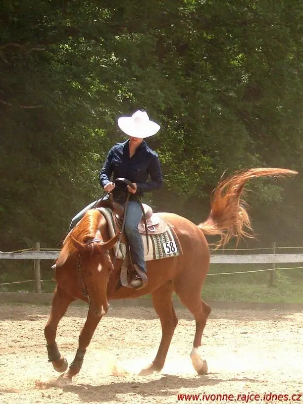
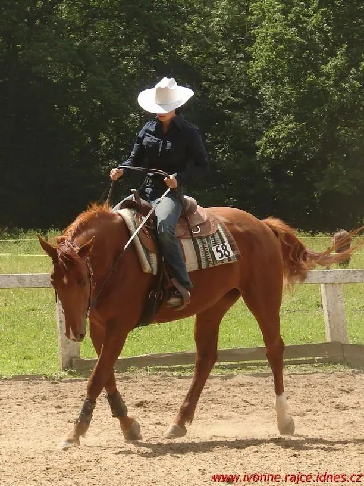
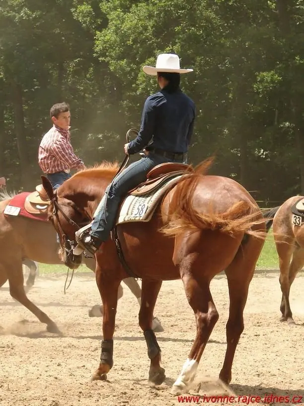

01 / 02
Fotografie z jezdeckých závodů
Fotím westernové ježdění přímo na kolbišti, koně i jezdce v pohybu. Fotky ze závodů ukládám do galerie na Rajčeti.
Zeptat se na termín→


Western, koně a prach kolbiště
Zeptat se na termín →(01) Ahoj
Jmenuji se Iva Titzová a fotím westernové jezdecké závody. Zajímá mě kůň i jezdec v pohybu, přímo na kolbišti, kde se to všechno odehrává.
(02) Co fotím
01 / 02
Fotím westernové ježdění přímo na kolbišti, koně i jezdce v pohybu. Fotky ze závodů ukládám do galerie na Rajčeti.
Zeptat se na termín→02 / 02
Našli jste se v mé galerii? Pokud máte o fotografie zájem, napište mi e-mail a domluvíme se.
Zeptat se na termín→(04) Postup
Od první zprávy po hotovou galerii.
Krok 1 z 4
Fotky ze závodů ukládám na Rajče. Projděte si album z akce, které jste se účastnili.
Krok 2 z 4
Pošlete mi e-mail a uveďte závody, jméno koně nebo startovní číslo a fotky, které se vám líbí.
Krok 3 z 4
Odpovím vám a domluvíme se na podrobnostech.
Krok 4 z 4
Vybrané fotografie vám pošlu podle domluvy.
Kůň a jezdec v jednom pohybu.
(05) Za objektivem
Fotografuji westernové ježdění. Na závodech stojím u ohrady a sleduji koně a jezdce při jednotlivých úlohách. Někdy je to klidný klus, jindy prach, švih ocasu a soustředěný pohled pod kloboukem.
Své fotky ukládám do galerie na Rajčeti, kde jich je už přes 3 600. Kdo se v galerii najde, může si u mě fotky vyžádat.
Pokud máte o fotografie zájem, napište mi e-mail a domluvíme se.
Iva
Iva Titzová · Fotografka westernových jezdeckých závodů
V mé galerii na Rajčeti na adrese ivonne.rajce.idnes.cz, kde jsou fotky rozdělené do alb.
Napište mi na iva.titzova@seznam.cz, které fotky vás zajímají. Nejlépe s názvem alba a startovním číslem.
Fotky v galerii jsou náhledové. Pokud o některou máte zájem, napište mi a domluvíme se.
Napište mi termín a místo akce a dám vám vědět.
(07) Kontakt
Napište pár vět o tom, co si představujete, a termín, který se vám hodí.
iva.titzova@seznam.cz